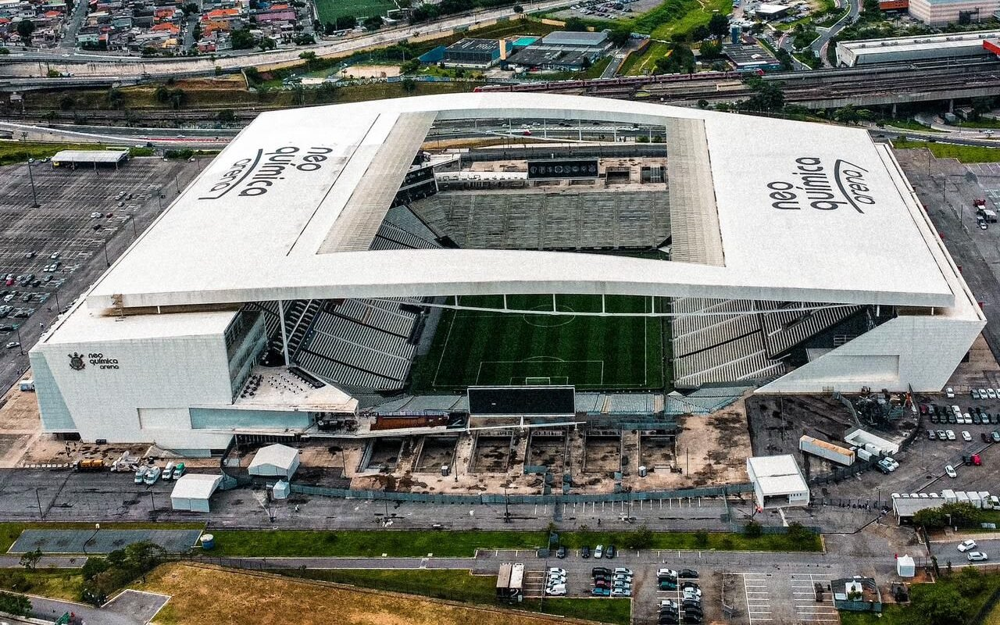

Neo Química Arena
Inaugurada em 2014, a Arena é a casa oficial do Timão, localizada em Itaquera, São Paulo. Ela foi palco da abertura da Copa do Mundo de 2014.
Com capacidade para quase 48 mil torcedores, é um dos estádios mais modernos do país, oferecendo uma experiência única para a Fiel Torcida.
